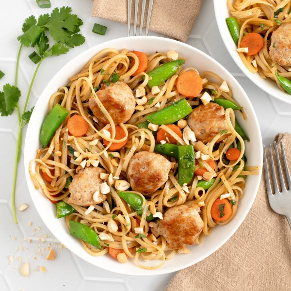

Ginger Chicken Meatball Stir-Fry with Noodles, Snap Peas & Cashews

Total Time
35 min
Nutrition (Per Serving)
701.3 kcalCalories
38.8 gProtein
83.2 gCarbs
24.3 gFat
Full nutrition table
| Calories | 701.3 kcal |
| Total fat | 24.3 g |
| Saturated fat | 5.5 g |
| Trans fat | 0.1 g |
| Cholesterol | 121.3 mg |
| Sodium | 257.8 mg |
| Carbohydrates | 83.2 g |
| Fiber | 7 g |
| Sugars | 13.7 g |
| Protein | 38.8 g |
| Potassium | 1485.8 mg |
| Calcium | 132 mg |
| Iron | 5.8 mg |
| Vitamin A | 261.1 IU |
| Vitamin C | 80.4 mg |
| Vitamin D | 0 IU |
Cookware
Ingredients
- 2 mediumcarrots
- ¼ cupcashews, roasted unsalted
- 1 small bunchcilantro
- 2 (1 inch) piecesginger root
- 1 small bunchgreen onions (scallions)
- 1 lbground chicken
- 2 (8 oz) pkgssugar snap peas
- black pepper
- cinnamon, ground
- cloves, ground
- fish sauce
- flat rice (pad thai) noodles
- garlic powder
- honey
- soy sauce
- toasted sesame oil
Steps
- Fill a large pot about halfway with hot water (from the tap); cover and bring to a boil over high heat.
- Once the water in the pot is boiling, remove from heat and add rice noodles. Soak for 10 minutes, or according to package directions, then drain in a colander and rinse under cold water; set aside.10 oz flat rice (pad thai) noodles
- Meanwhile, place soy sauce, fish sauce, water, honey, and spices in a small bowl; whisk to combine the sauce and set aside.¼ cup soy sauce
2 tbsp fish sauce
2 tbsp water
4 tsp honey
1 tsp garlic powder
½ tsp black pepper
⅛ tsp clove, ground
⅛ tsp cinnamon, ground - Wash and dry the fresh produce.2 (1 inch) pieces ginger root
2 medium carrots
2 (8 oz) pkg sugar snap peas
1 small bunch green onions (scallions)
1 small bunch cilantro - Peel and mince ginger; place in a medium bowl along with chicken, additional soy sauce, and pepper. Using your hands, mix well to combine.1 lb ground chicken
2 tsp soy sauce
½ tsp black pepper - Using a tablespoon measure, form the chicken mixture into rounded meatballs and place on a plate.
- Preheat a large skillet over medium-high heat.
- Once the skillet is hot, add oil and swirl to coat the bottom; add meatballs and cook, turning occasionally, until golden brown and cooked through, 6-8 minutes. Transfer to a clean plate and loosely cover with aluminum foil. (Reserve skillet with cooking juices for later use.)4 tsp toasted sesame oil
- Meanwhile, peel, trim, and slice carrots crosswise into thin rounds; halve snap peas crosswise. Place both in a clean medium bowl.
- Trim and slice green onions crosswise into ¼-inch pieces; add to the bowl with the other veggies.
- Return skillet to medium-high heat, add more oil, and swirl to coat the bottom. Add veggies and stir-fry until fork-tender, 3-4 minutes.2 tsp toasted sesame oil
- While the veggies are cooking, shave cilantro leaves off the stems; discard stems and mince the leaves.
- When the veggies are done, add noodles, sauce, and cilantro to the skillet; cook, stirring frequently, until the noodles are coated and warmed through, 2-3 minutes.
- Meanwhile, roughly chop cashews.¼ cup cashews, roasted unsalted
- To serve, divide noodles, veggies, and meatballs between bowls; top with cashews and enjoy!